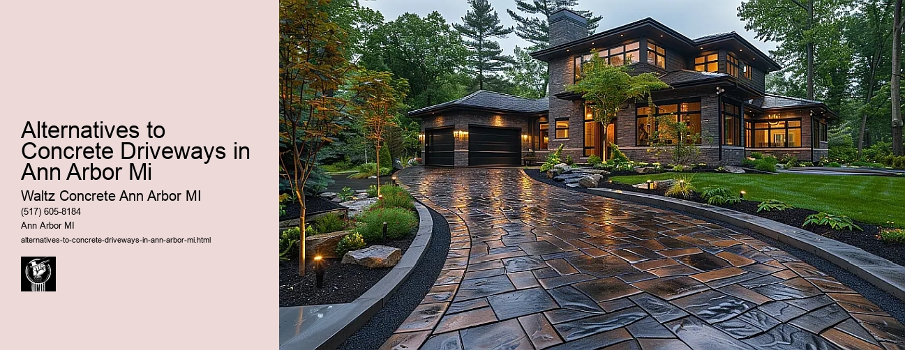

News
Concrete Driveway Installation Ann Arbor Mi
Concrete Driveway Installation Ann Arbor Mi
Choosing the right contractor for installation
Cost of concrete driveway installation in Ann Arbor
Permit requirements for driveway installation in Ann Arbor
The process and timeline of concrete driveway installation
Different types of concrete used in driveways
Maintenance and Repair of Concrete Driveways in Ann Arbor Mi
Maintenance and Repair of Concrete Driveways in Ann Arbor Mi
Preventive maintenance tips for durability
Common causes for concrete driveway damage
Professional companies offering repair services in Ann Arbor
Doityourself versus professional repairs
Costs associated with repairing a concrete driveway
Designs and Styles of Concrete Driveways in Ann Arbor Mi
Designs and Styles of Concrete Driveways in Ann Arbor Mi
Popular design trends for driveways
Considering climate factors when choosing a design or style
Unique customizations available for concrete driveways
Influence of home architecture on driveway design
Stamped stained and decorative options
Environmental Impact of Concrete Driveways in Ann Arbor Mi
Environmental Impact of Concrete Driveways in Ann Arbor Mi
Carbon footprint associated with concrete production
Use of sustainable materials in concrete driveways
Drainage considerations to reduce environmental impact
Local regulations regarding environmentally friendly driveways
Potential use of permeable or porous pavement
Alternatives to Concrete Driveways in Ann Arbor Mi
Alternatives to Concrete Driveways in Ann Arbor Mi
Asphalt driveways and their proscons
Paver stone driveways and their benefitsdrawbacks
Gravel or crushed stone as an alternative option
Comparing costs between different driveway materials
Resinbound surfaces as emerging technology
About Us
Contact Us

Alternatives to Concrete Driveways in Ann Arbor Mi
Alternatives to Concrete Driveways in Ann Arbor Mi
Title: Exploring Alternatives to Concrete Driveways in Ann Arbor, MI
As the world continues to embrace sustainability and eco-friendliness, homeowners in Ann Arbor, Michigan are not left out. Many have started exploring alternatives to concrete driveways that are environmentally friendly and aesthetically appealing. The typical grey, concrete driveway is gradually making way for more innovative options that offer durability, aesthetic appeal, and a reduced carbon footprint. In this essay, we'll delve into some of these alternative materials.
One favorite choice among the residents of Ann Arbor is permeable paving. This option comes with a host of benefits such as reducing stormwater runoff by allowing water to seep through its surface into the ground below. This mitigates erosion and flooding problems that might arise from heavy rainfall - a common occurrence in Michigan. Permeable paving can be achieved using various materials including porous asphalt, permeable concrete or interlocking pavers.
Another notable alternative is gravel driveways. Gravel is easy to install and gives a rustic look which blends perfectly with natural surroundings. Beyond aesthetics though, gravel driveways are cheaper than their concrete counterparts and require less time for installation.
In terms of environmental friendliness and visual appeal, grass driveways also make an excellent choice. Grass pavers create a sturdy grid for parking while preserving green space; theyre often made from recycled plastics which contribute positively towards waste management efforts.
Additionally, some homeowners prefer asphalt due to its resilience during harsh winters experienced in Ann Arbor unlike concrete which may crack under intense frost heave cycles. Though it requires regular maintenance (sealing every 2-5 years), it's still less expensive than concrete both in installation and repair costs.
Other equally impressive alternatives include brick or cobblestone pavers known for their classic beauty; resin-bound surfacing made from clear UV-stable polyurethane resin mixed with aggregate like stone/pebble/gravel; or even recycled materials like crushed glass or rubber, both of which are gaining popularity for their eco-friendliness.
In conclusion, while concrete driveways have been the traditional choice for many homeowners in Ann Arbor, Michigan and beyond due to their strength and durability, the environmental impact and aesthetic considerations are causing a shift towards alternative materials. A range of options from permeable paving to resin-bound surfacing provide green solutions without compromising on functionality or visual appeal. The best choice ultimately depends on individual preferences related to cost, maintenance requirements, climate resilience and personal aesthetics.
Concrete Driveway Installation Ann Arbor Mi
Alternatives to Concrete Driveways in Ann Arbor Mi
Frequently Asked Questions
What are some alternatives to concrete driveways in Ann Arbor, Michigan?
Some alternatives include asphalt, gravel, brick or cobblestone pavers and permeable pavement. These materials can provide different aesthetics and have varying costs, maintenance needs and environmental impacts.
Is it legal to use alternative materials for driveways in Ann Arbor, Michigan?
Yes, it is generally legal to use alternative materials for driveways as long as they meet local building codes and ordinances. However, its always best to check with local authorities or a knowledgeable contractor before beginning any major construction project.
How do the costs of these alternatives compare to traditional concrete driveways?
Costs can vary significantly depending on the material chosen and the size of the driveway. Asphalt tends to be cheaper than concrete while pavers or cobblestones are typically more expensive. Gravel is usually the least expensive option but may require more ongoing maintenance.
Alternatives to Concrete Driveways in Ann Arbor Mi